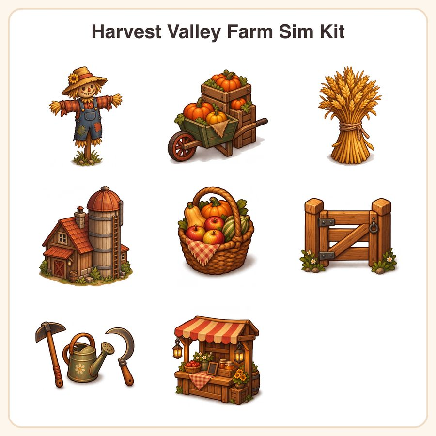

$6.99
View on EtsyGive your cozy farming sim a warm autumn glow with a hand-crafted-style asset pack built for indie devs. What's included (8 sprites): - Wooden scarecrow prop with patchwork clothes - Pumpkin crate stack icon with wheelbarrow - Wheat sheaf bundle tied with twine - Rustic farmhouse silo building sprite - Harvest basket overflowing with squash and apples - Wooden fence gate seamless tile piece - Farmer's tool UI icon set: hoe, watering can, sickle - Cozy lantern-lit market stall prop File formats & sizes: - Transparent PNGs at 1024px and 512px for every asset (16 files total) - 1 PNG preview sheet showing the full collection - Delivered as a zipped download, ready to drop into Unity, Godot, GameMaker, or your engine of choice Style: warm painterly pixel-adjacent HD sprites with a soft ochre-and-rust palette, chunky rounded outlines, and gentle drop shadows for a handcrafted cottagecore look. How to use: import straight into your game project, resize as needed, and layer over your own tilesets or UI. Great for farming sims, cozy life-sim games, and autumn-themed updates. License: personal and small-business commercial use is included, covering up to 500 units/copies of your finished game or product. Please don't resell, redistribute, or share the raw asset files themselves. A quick honest note: these designs were created by our shop with the help of AI tools, then curated and prepped for game-ready use. 🌾 Questions before you buy? Just message us - happy to help!